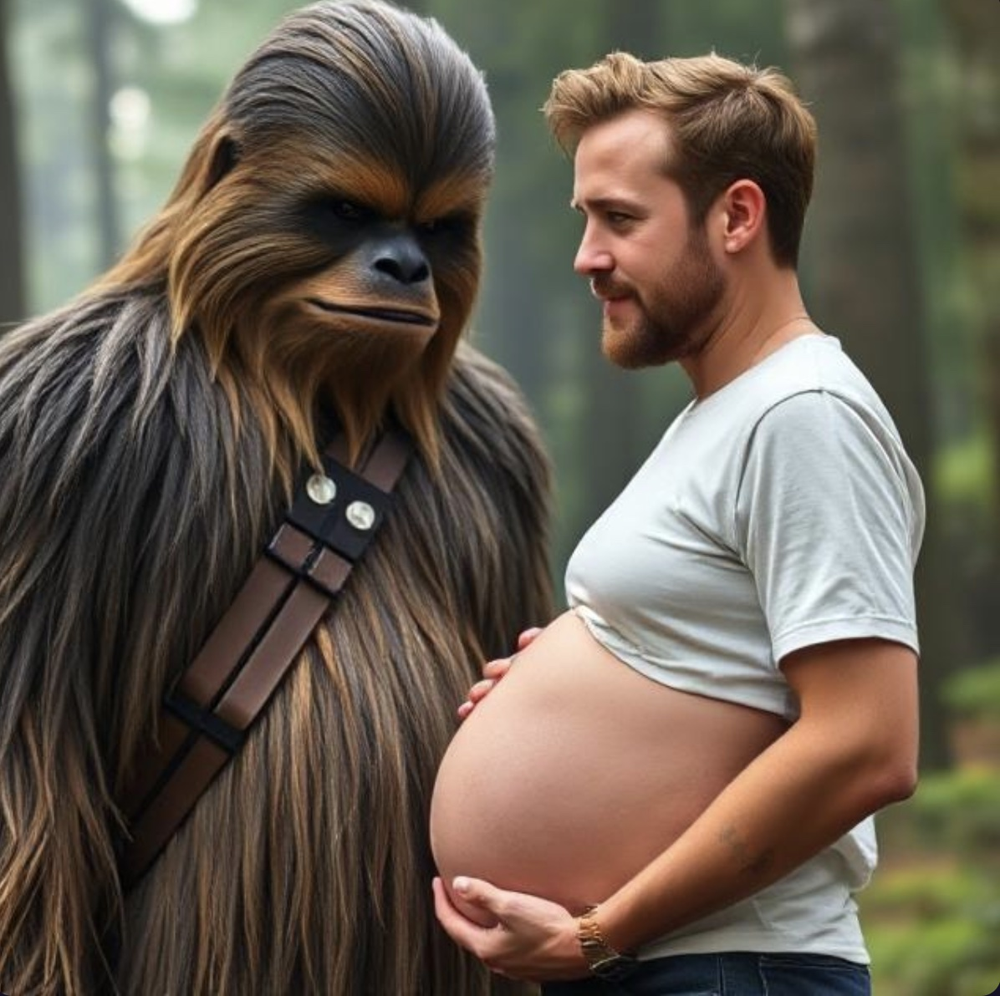

Ryan Gosling and Chewbacca now expecting their third kid

In a galaxy shockingly close to Hollywood, actor Ryan Gosling and legendary Wookiee Chewbacca have confirmed they are expecting their third child together.
The news broke after the couple was spotted exiting a Baby Gap in Beverly Hills, where Chewbacca reportedly attempted to eat a stroller thinking it was a snack. Witnesses say Gosling looked calm and radiant, while Chewbacca was “shedding with joy.”
This marks the third addition to the unconventional household, which already includes a toddler named “Growlston” and a 4-year-old named “Sebastian Solo Gosling.”
“We’re beyond thrilled,” Gosling told The Misinformer. “Chewie’s been nesting — he built a crib entirely out of dismantled droids.”
The couple met in 2016 on the set of La La Wookiee, an ill-fated Star Wars musical spinoff that was never released due to “excessive emotional dancing and fur allergies.” Despite the flop, their love blossomed in the shadows of Hollywood’s weirdest love stories.
Fans have already started speculating on baby names. Top contenders include “Fluff Vader,” “ChewJunior,” and “Mick Jaggernaut.”
When asked if they’ll be expanding their home, Gosling smiled and said, “We’re looking into real estate on Endor. The Ewoks have a good school system.”
As for Han Solo? He's reportedly “fine,” but unfollowed Gosling on Instagram late last night.